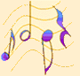

"MISSA DE SANTO ANTONIO"
Letra: Frei José Carlos da Silva
Música: Frei Antonio Fernando Fabretti


 (Para ouvir a música clique aqui)
(Para ouvir a música clique aqui)
CANTO DE ENTRADA
Reunidos, irmãos aqui estamos,
Para cantar o louvor do SENHOR
Jubilosos e alegres entoamos
Louvores ao nosso protetor.
(Refrão) Santo Antonio, vede com que alegria,
Vos louva o povo,
que em vós confia!(bis)
Eis aqui todo o povo celebrando,
Com piedade, ternura e amor.
Santo Antonio o grande pregoeiro
Da paz, da verdade e do amor.
(Refrão) Santo Antonio, vede com que alegria,
Vos louva o povo,
que em vós confia!(bis)
(Para ouvir a música clique aqui)
CANTO DE OFERENDAS
Nesta mesa, SENHOR,
Colocamos nosso labor
Em forma de Oração
E de ajuda ao irmão.
(Refrão) Em Vossas Mãos, SENHOR,
Depositamos, nosso amor. (bis)
Com o vinho e o pão,
Nossa vida em oblação;
Trabalho com suor,
Na alegria e na dor.
(Refrão) Em Vossas Mãos, SENHOR,
Depositamos, nosso amor.(bis)
Nossa vida, se faz,
Oferenda sobre o altar;
E junto ao vinho e pão;
Em completa doação.
(Refrão) Em Vossas Mãos, SENHOR,
Depositamos, nosso amor.(bis)